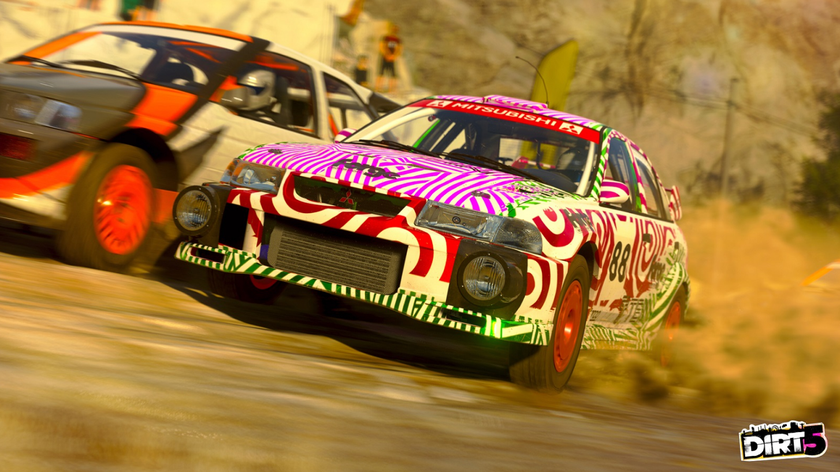

12.10.2020
Digital Foundry выпустили разбор еще невышедшей DIRT 5. На основе ранней версии игры журналисты показали, как гонка работает на Xbox Series X, в том числе в режиме 120 FPS.
DIRT 5 на Xbox Series X получила три режима воспроизведения: 120 Гц, упор на стабильную частоту кадров и улучшенная графика. В режиме с упором на FPS, игра запускается с динамическим разрешением в 3840×216 (4К) при стабильных 60 кадрах в секунду. При этом пользователь будет видеть улучшенные тени, меньше народу на трибунах, а также снижение разрешения в сложных сценах до 1440p.
В свою очередь режим улучшенной графики также позволяет запускать DIRT5 при 3840×216 (4К), но частота кадров менее стабильна. Зато игрок будет видеть больше деталей на уровнях и улучшенные тени.
В режиме 120 FPS DIRT 5 запускается в разрешении 1440 р. При этом значительно ухудшаются детализация окружения и тени, а болельщики полностью исчезают. Как отмечает Digital Foundry, иногда частота кадров опускается до 110, но это малозаметно.